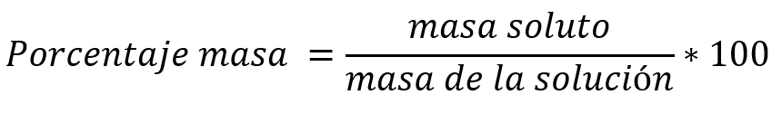

UNIDAD EDUCATIVA MUNICIPAL
"SAN FRANCISCO DE QUITO"

UNIDAD EDUCATIVA MUNICIPAL |
|
| Nombre: Angel Pastaz | |
| Curso: | 2do BT "D" |
| Materia: Quimica |
|
| PORCENTJE MASA-VOLUMEN | |
| FÓRMULA: | |
|  | |
| La concentración de las soluciones es la cantidad de soluto contenido en una cantidad determinada de disolvente o disolución. Los términos diluidos o concentrados expresan concentraciones relativas. | |
| El soluto y solvente son dos de los componentes de una solución. El soluto es la sustancia (sólida, líquida o gaseosa) que se disuelve en el solvente para producir una mezcla homogénea conocida como solución. |
|
|
|
|
|
|
Autores: Angel Pastaz, Melany Guaytarilla, Juan Mejía, Damaris Tulcanaza 2020 - 2021 2do Bachillerato Técnico Informático Unidad Educativa Municipal Técnica y en Ciencias "San Francisco de Quito" |
||